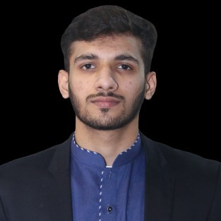

Trustworthy, privacy-preserving AI for healthcare — federated learning, edge intelligence, and decentralized systems that learn without centralizing sensitive data. Currently building dAIbetes, a federated framework for personalized Type 2 diabetes prediction.

Trustworthy AI, AI security and robustness, privacy-preserving methods.
Federated edge AI, secure decentralized ML, non-IID and personalized FL.
Multimodal healthcare AI, foundation models, longitudinal clinical data.
Edge intelligence and TinyML for resource-constrained deployment.
At the University of Hamburg, I work on privacy-preserving federated learning and virtual-twin modeling for personalized Type 2 diabetes treatment prediction — training across distributed, non-IID clinical data without centralizing sensitive patient information.